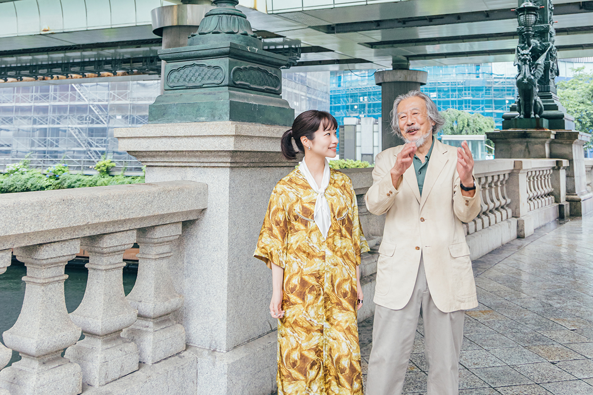
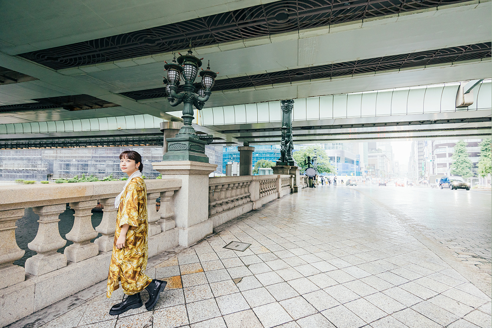
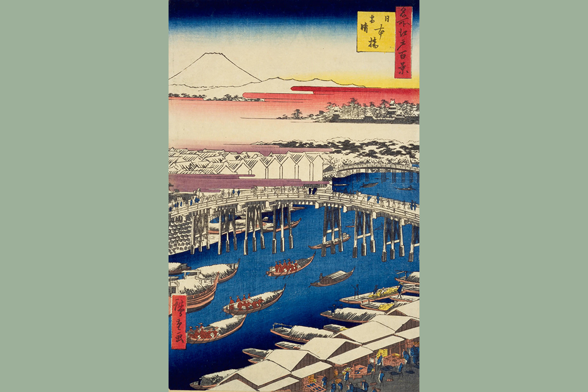
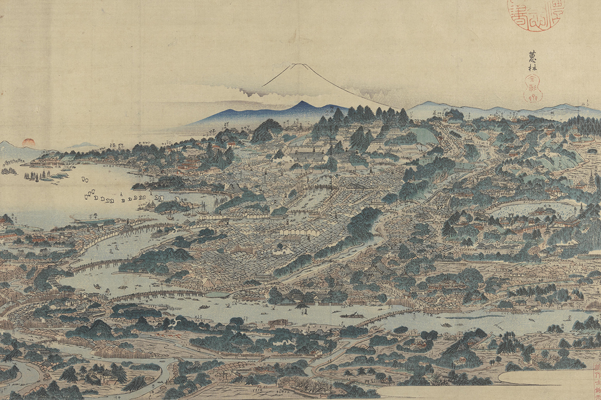
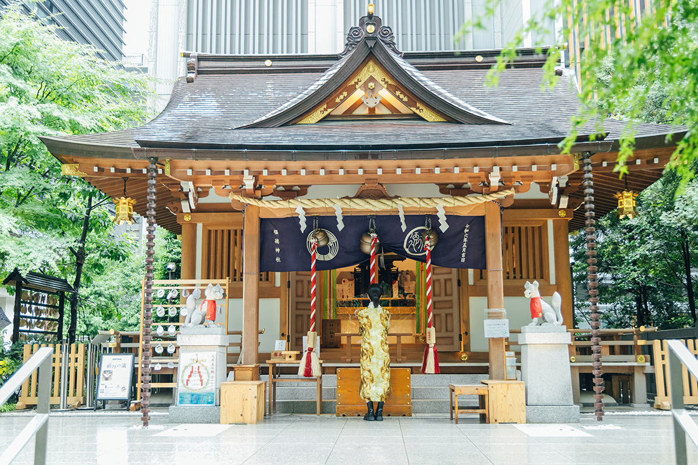
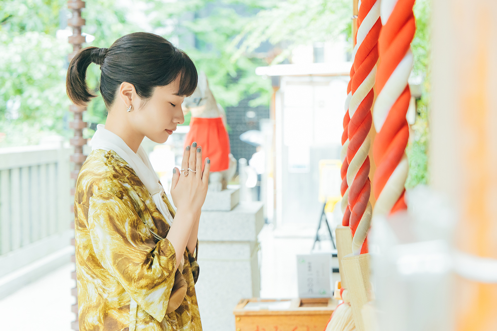
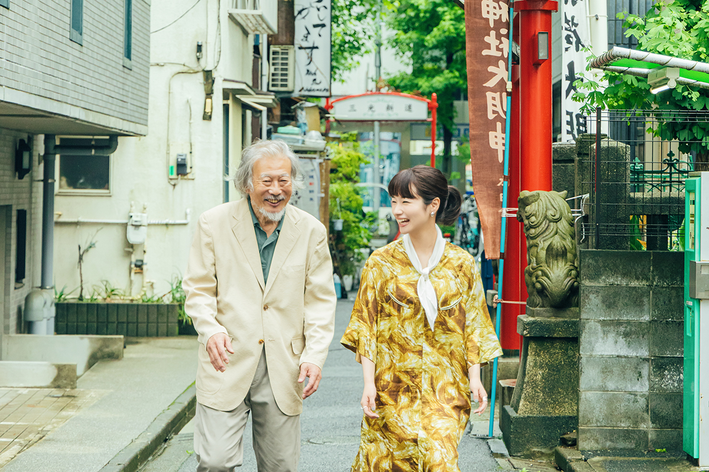

Токио · Нихонбаси · прогулка
Нихонбаси пешком: от нулевого километра пяти трактов до святилища с кошками

Нихонбаси с начала XVII века был перекрёстком всей страны: отсюда расходились пять главных трактов. В 2025 году актриса и мастер японского танца прошла этот квартал вместе с историком городской застройки и посмотрела на него с точки зрения старых дорог.
Мост
С чего начинаются дороги Японии
Когда Иэясу Токугава (1543–1616), объединитель страны и первый сёгун династии Токугава, открыл в Эдо своё правительство, он назначил Нихонбаси началом пяти главных трактов: Токайдо, Накасэндо, Косю-кайдо, Осю-кайдо и Никко-кайдо. Сюда стекались купцы и путники со всей Японии, по каналам везли товары, у реки вырос рыбный рынок. Квартал стал центром торговли и кухни, а ещё здесь стояли театральные балаганы, и в них расцвели кабуки и ракуго.
Проводником в этой прогулке был историк городской застройки, доктор технических наук, который много лет изучает города и их набережные. С ним шла актриса и мастер японского танца: в 2021 году она приняла имя бабушки и стала третьей главой своей танцевальной школы.
«Для меня Нихонбаси до сих пор солидный центр Токио. А смотреть на него с точки зрения дорог я буду впервые, и мне очень интересно»
актриса и мастер японского танца

Первый мост здесь, по преданию, построили в 1603 году, в год основания сёгуната. Тогда он был деревянным и горбатым. Нынешний каменный мост с двумя арками достроили в 1911 году, и он девятнадцатый по счёту. Посреди моста вмурован знак нулевого километра, начало дорог Японии. Резные сосны и каркасы на главных столбах моста тоже напоминают, что здесь начинались пять трактов.
Вид
Почему река делает поворот
Река Нихонбаси была прорыта как канал от реки Сумида к замку Эдо. По словам историка, Иэясу нарочно сделал на ней изгиб.
«Лодка поднимается от Сумиды, и перед мостом Эйтай впереди встаёт гора Цукуба. За мостом Эдо появляется величественная Фудзи. Под Нихонбаси канал поворачивает, и прямо перед глазами вырастает главная башня замка Эдо. Иэясу хотел показать мощь правителя страны, и Фудзи в этом виде служила фоном для замка. Место было важнейшим, поэтому Нихонбаси и стал началом пяти трактов»
историк городской застройки
Если спуститься по лестнице у памятного камня с историей моста и посмотреть на мост сбоку, видно, что часть камней опоры у воды почернела. Это следы пожара 1923 года: во время Великого землетрясения Канто о мост ударилась горящая лодка. Когда мост ремонтировали к его столетию, камни остались на месте.
«Когда видишь это своими глазами, а не в учебнике, начинаешь думать об историях, которых не знал. Город перестраивают, но рядом сохраняются следы прошлого, и это прекрасно. Хочется, чтобы их берегли»
актриса и мастер японского танца
Гравюры
Чей это вид
Дальше путь идёт по улице Тюо-дори, которая в эпоху Эдо была трактом Накасэндо, в сторону квартала Муромати. По дороге историк показал две старинные картины.

Первая это «Нихонбаси: ясно после снегопада» Хиросигэ Утагавы (1797–1858), одного из главных мастеров японской гравюры: на ней мост Нихонбаси снежным утром. Вторая называется «Вид Эдо с высоты птичьего полёта», это точная копия ширмы «Эдо одним взглядом», которую Кэйсай Кувагата (1764–1824) написал, когда служил придворным художником княжества Цуяма. Он показал процветающий Эдо со стороны квартала Хондзё, с удивительной перспективой.
«Вид на замок Эдо и Фудзи поверх Нихонбаси рисовали многие. Самый знаменитый у Хиросигэ, но придумал этот вид Кэйсай Кувагата, ещё под именем Масаёси Китао, для книги „Знаменитые места Токайдо в картинках“ 1797 года»
историк городской застройки
После этого вид стал классическим.

Святилище
Фукутоку: больше тысячи лет среди небоскрёбов
В переулке у станции Мицукоси-маэ между торговыми центрами и офисными зданиями вдруг появляются ворота-тории святилища Фукутоку. По преданию, оно стоит здесь с 859–877 годов. Главное божество святилища Уканомитама, бог урожая, которого почитают и как покровителя торговли. До эпохи Эдо вокруг были поля, деревня называлась Фукутоку, и святилище знали как Фукутоку-инари.
Святилище почитал Хидэтада Токугава (1579–1632), второй сёгун династии, сын Иэясу. После конца сёгуната святилище уменьшилось и едва не исчезло, но верующие его восстановили. Его четыре раза переносили, и в итоге у него снова красивое главное здание.
«Для понимания Эдо и Токио это очень важное святилище. Так много памяти о прошлом сохраняют немногие»
историк городской застройки

Рядом стоит торговый комплекс COREDO Muromachi, и старое святилище по соседству с ним хорошо показывает, как в Нихонбаси уживаются традиция и новое. Актриса помолилась перед тихим зданием святилища и вспомнила о своей школе танца, которая хранит традицию больше 300 лет.

«Я давно думаю, что традиция продолжается сама, если она нужна времени, как это святилище. Не надо думать о её будущем. Надо самой с радостью передавать её людям своего времени»
актриса и мастер японского танца
Святилище Фукутоку (Мэбуки-инари)
- Адрес
- Токио, район Тюо, Нихонбаси-Муромати, 2-4-14
- Телефон
- +81 3-3276-3550
- Часы работы
- территория открыта всегда; амулеты и печати госюин 10:00–17:00
- Сайт
- mebuki.jp
Театры
Нингё-тё: квартал кабуки
Прогулка по памяти Эдо продолжается в Нингё-тё. Около нынешнего третьего квартала Нингё-тё когда-то стояли театры кабуки «Накамура-дза» и «Итимура-дза», чайные дома и квартал удовольствий Ёсивара.
Историк больше 50 лет изучает, как растут города, и всё это время ходит по улицам сам. Главную радость таких прогулок он объясняет так:
«Прежде всего чувствуешь следы прошлого, старого Эдо. Заранее ничего знать не нужно. Идёшь, доверяешь чутью, и улица сама подсказывает: сверни сюда, будет интересно. Если это тебя тронуло, потом почитай, и впечатление станет объёмным. Когда полвека идёшь этим путём, начинаешь понимать, как устроено даже место, где ты впервые, даже за границей»
историк городской застройки
Актриса согласилась: в искусстве всё так же. Кто постоянно совершенствуется, тот начинает понимать суть вещей и видеть шире. Сама она, по её словам, как глава школы только в начале пути, но хочет дойти до вершины.

Святилище
Санко-инари: актёр и пропавшие кошки
Последней точкой прогулки стало святилище Санко-инари в переулке квартала Хоритомэ-тё. По преданию, его название связано с актёром кабуки Сандзюро Сэки II (1786–1839), которого называли мастером. Однажды, играя в театре «Накамура-дза» в Нихонбаси, он почувствовал вспышку, похожую на священный свет, а зрителям показалось, что от его тела исходит сияние. После этого его слава стала прочной, и он соединил знак «три» из своего имени со знаком «свет» и назвал святилище Санко-инари. Потом святилище стояло в саду дома крупного землевладельца и почиталось как хранитель местной земли.
Основано оно, по преданию, ещё до 1689 года. Издавна считается, что здесь помогают, если пропала кошка, и хозяева, к которым кошка вернулась, в благодарность приносят фигурки манэки-нэко, кошек с поднятой лапой.
«Актрисе мимо такого места пройти нельзя»
актриса и мастер японского танца
Святилище Санко-инари
- Адрес
- Токио, район Тюо, Нихонбаси-Хоритомэ-тё, 2-1-13
- Телефон
- +81 3-3661-6445
- Часы работы
- территория открыта всегда
В конце прогулки актриса подвела итог:
«По Токио я почти всегда просто добиралась куда-то. А стоило взглянуть иначе, и открытия были на каждом шагу. Это было не только про историю, это тронуло сердце. Хочу пройти ещё много разных дорог»
актриса и мастер японского танца
В улицах живёт история, а дороги передают культуру дальше. Если идти по городу с этой мыслью, обычная прогулка становится путешествием.
Фото: Майко Фукуи.